Three looks, one per mood. Every image is drawn at 1x and enlarged without smoothing. The standing line is sheet row 4; the collision height is that row. Numbers: numbers.txt.
Tiles: thin 7, tall 14, both 21 static; with animation 33. Animation: 8 distinct frames, 4 extra tiles thin, 8 extra tiles tall. Lower edge under 24 luminance steps from the backdrop: 5.0% in the proposed layout, 3.7% in a sweep of the play area.
Weak point: The thin variant shows only one brick course, so the torn underside and the lanterns shrink to a few pixels; the brick body is still close in value to the lit city windows behind it.
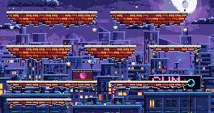
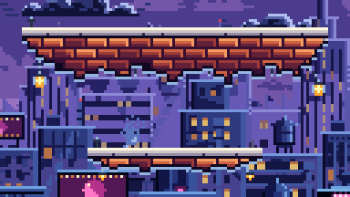
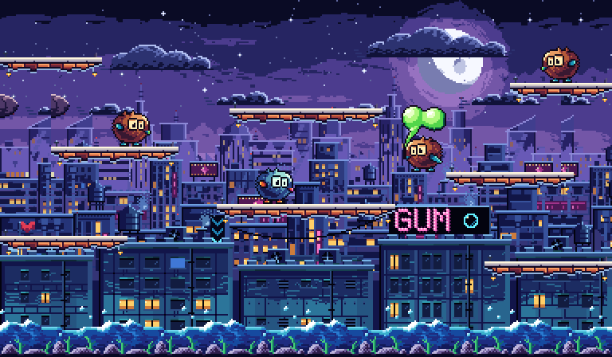
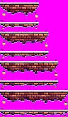
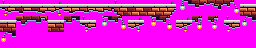
Tiles: thin 7, tall 14, both 21 static; with animation 37. Animation: 8 distinct frames, 2 extra tiles thin, 14 extra tiles tall. Lower edge under 24 luminance steps from the backdrop: 7.6% in the proposed layout, 7.1% in a sweep of the play area.
Weak point: The soil is dark and sits near the dusk skyline in value, so the island reads mostly through its turf line and orange rim; the vines of the thin variant move in only 3 distinct frames.
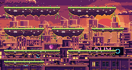
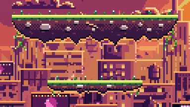
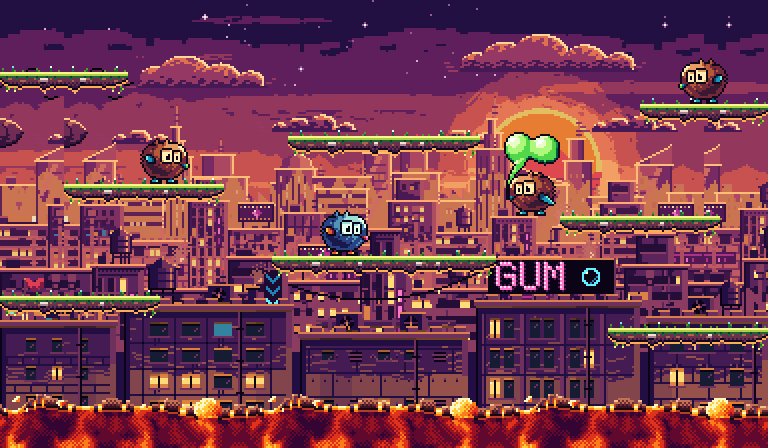
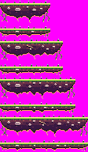
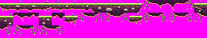
Tiles: thin 7, tall 14, both 21 static; with animation 49. Animation: 8 distinct frames, 14 extra tiles thin, 14 extra tiles tall. Lower edge under 24 luminance steps from the backdrop: 6.1% in the proposed layout, 4.8% in a sweep of the play area.
Weak point: The rotors are still thin two-pixel blades and read as antennae at 1x; the hull is a plain trapezoid and one palette entry (y1) is unused.
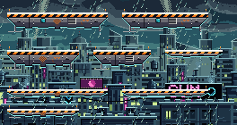
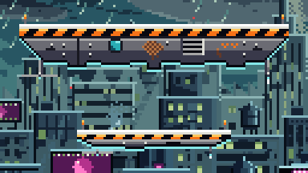
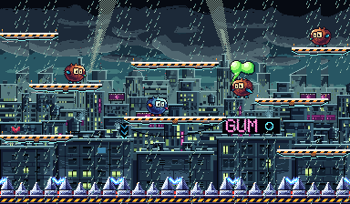
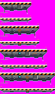
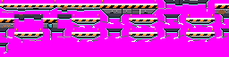
Values in orange differ from the stage table in src/core/stage.c. They are a proposal, not a decision.
| x | y | width | tiles tall | sprite lines | table x | table y | table width |
|---|---|---|---|---|---|---|---|
| 0 | 148 | 80 | 1 | 144..159 | 0 | 164 | 80 |
| 304 | 164 | 80 | 1 | 160..175 | 304 | 164 | 80 |
| 136 | 128 | 112 | 1 | 124..139 | 136 | 140 | 112 |
| 32 | 92 | 80 | 1 | 88..103 | 32 | 104 | 80 |
| 280 | 108 | 80 | 1 | 104..119 | 280 | 104 | 80 |
| 144 | 68 | 96 | 1 | 64..79 | 144 | 72 | 96 |
| 0 | 36 | 64 | 1 | 32..47 | 0 | 40 | 56 |
| 320 | 52 | 64 | 1 | 48..63 | 328 | 40 | 56 |
| layout | worst line, strips | worst lines | lines shared by two or more islands |
|---|---|---|---|
| stage table today, all tall | 17 | 160..167 | 36..67, 100..131, 160..191 |
| stage table today, all thin | 10 | 100..115, 160..175 | 36..51, 100..115, 160..175 |
| proposal | 7 | 124..139 | none |